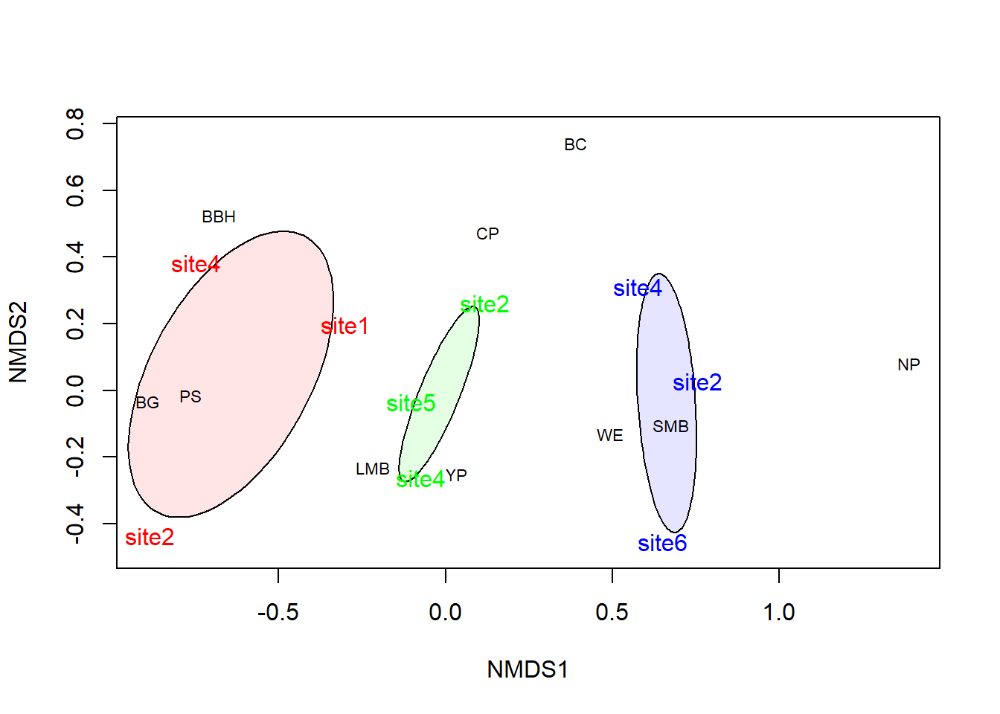

Multivariate statistics

Introduction
This week we are going to tak a hard left (or right depending on which is your dominant hand) and begin to discuss methods with which we can examine emergent patterns in complex, messy data sets. To begin these discussions, we will take a look at the use of multivariate techniques this week. This class of analysis kind of stands on its own compared to a lot of the other methods we have discussed so far this semester. One of the biggest changes that we will see in this lab is that we are no longer working with a single response variable and one or more explanatory variables, but rather many response variables and one or more explanatory variables. These methods rely heavily on linear algebra, as we have discussed in class, and more broadly these and other machine-learning techniques make extensive use of distance-based measurements between observations. This week, we will try to give you a taste of what these tools can be used for. Next week, we will continue to push into some (slightly) more-advanced techniques.
By the end of this lab, you should 1) understand why we use multivariate analyses and how they do or do not fit in the context of what we have discussed so far, 2) be comfortable analyzing and visualizing associations with these methods, and 3) be able to interpret the results of some basic multivariate analyses.
We’ll be working with the tidyverse as always. We’ll also play with some functions from the vegan package that we demonstrated in the lecture tutorial, so you can go ahead and load those up now if you want to.
Data explanation
This week we will work with a data set that was collected by faculty and students at SUNY Cobleskill and was analyzed by a lake management grad student at SUNY Oneonta (who also works at SUNY Cobleskill). These data are from a study that examined the response of fish communities to herbicide treatments in Saratoga Lake, New York.
Let’s start by reading in the data file. This data set is not in the class data, so we will read it in straight from the raw file in one of my GitHub repositories:
# Read in the data file
fish = read.csv('https://raw.githubusercontent.com/danStich/danStich.github.io/master/stich/data/saratoga.csv')
# Have a look at the data
str(fish)## 'data.frame': 635 obs. of 8 variables:
## $ Name.of.Water: Factor w/ 1 level "Saratoga": 1 1 1 1 1 1 1 1 1 1 ...
## $ Year : int 2007 2007 2007 2007 2007 2007 2007 2007 2007 2007 ...
## $ Date : Factor w/ 3 levels "10/10/2008","10/3/2007",..: 2 2 2 2 2 2 2 2 2 2 ...
## $ Site : int 1 1 1 1 1 1 1 1 1 1 ...
## $ CommonName : Factor w/ 10 levels "BBH","BC","BG",..: 3 3 3 3 3 3 3 3 3 3 ...
## $ Species.Code : int 598 598 598 598 598 598 598 598 598 598 ...
## $ Fish.Number : int 1 2 3 4 5 6 7 8 9 10 ...
## $ Total.Length : int 40 56 62 63 64 67 70 70 70 72 ...The brief decsription of the data is as follows:
Name.of.Water: Name of the lake
Year: Year during which electrofishing survey was conducted
Date: Date of survey
Site: Site ID (1, 2, 4, 5, 6). IDK why there is no three
CommonName: Abbreviated common names for species
Species.Code: Numeric code for each species in NYSDEC fisheries database
Fish.Number: Individual fish identifier
Total.Length: Total length of fish in millimeters
Herbicides were applied to control Eurasian milfoil, an aquatic invasive plant species after in fall 2007. Fish communities were sampled prior to herbicide application in 2007, one year later in 2008, and two years later in 2009. The purpose of this study was to quantify any changes to the fish community at different sites. To do this, fish were collected from the lake at five sites using standardized electrofishing. Each fish was identified and measured.
Now, we want to see if we can use counts of each species as related response variables to determine any differences in fish communities before and after herbicide application.
Data manipulation
We will have to do some data manipulation before we can move on with the analysis. In order to analyze the responses of multiple species to herbicide treatments, we need to get a matrix that contains counts of each species at each Site in each Year.
First, we need to make a column called seen, which we will initialize in the fish data with a 1 because each of the rows in the data are individual fish.
Next, we will group the dataframe by Year and Site and summarize counts as the sum() of the column seen in our fish dataframe. Then, we convert the dataframe from long form to wide form using the pivot_wider() function from dplyr:
mat1 = fish %>%
group_by(Year, Site, CommonName) %>%
summarize(counts = sum(seen)) %>%
pivot_wider(
names_from = CommonName,
values_from = counts)You can have a look at the new data format like this to see what we’ve done!
## # A tibble: 9 x 12
## # Groups: Year, Site [9]
## Year Site BBH BG CP LMB PS SMB WE YP BC NP
## <int> <int> <dbl> <dbl> <dbl> <dbl> <dbl> <dbl> <dbl> <dbl> <dbl> <dbl>
## 1 2007 1 6 73 1 37 2 1 1 8 NA NA
## 2 2007 2 NA 24 NA 25 1 NA NA 12 NA NA
## 3 2007 4 6 43 NA 28 3 NA 1 NA 1 NA
## 4 2008 2 1 14 1 11 1 1 2 24 2 NA
## 5 2008 4 2 11 NA 53 1 4 1 26 NA NA
## 6 2008 5 NA 11 2 57 5 1 1 21 NA NA
## 7 2009 2 NA NA NA 23 NA 5 2 17 1 2
## 8 2009 4 NA NA 1 13 NA 7 2 22 3 NA
## 9 2009 6 NA NA NA 6 NA 1 2 2 NA NAWe extract the Year column to a new object for convenience when we run the NMDS:
We’ll also set aside everything but the first two columns (Year and Site) in a numeric matrix that we can feed into the metaMDS() function from vegan.
# Get the community data by themselves as
# a numeric matrix
mat2 = as.matrix(mat1[ ,-c(1,2)])
# Have a look at the matrix
mat2## BBH BG CP LMB PS SMB WE YP BC NP
## [1,] 6 73 1 37 2 1 1 8 NA NA
## [2,] NA 24 NA 25 1 NA NA 12 NA NA
## [3,] 6 43 NA 28 3 NA 1 NA 1 NA
## [4,] 1 14 1 11 1 1 2 24 2 NA
## [5,] 2 11 NA 53 1 4 1 26 NA NA
## [6,] NA 11 2 57 5 1 1 21 NA NA
## [7,] NA NA NA 23 NA 5 2 17 1 2
## [8,] NA NA 1 13 NA 7 2 22 3 NA
## [9,] NA NA NA 6 NA 1 2 2 NA NANext, we want to replace all of the NA values with zeroes, since this is what they actually are:
# Replace all NA elements of matrix with
# zeroes bc those species were not seen
mat2[is.na(mat2)] <- 0And, finally, we will assign dimnames to the matrix that are our values for Site. This is something we haven’t played with much. Essentially, what we are doing here is assigning a vector of names to each the rows and the columns of our matrix.
#Swap out the row and clumn numbers for names
dimnames(mat2)=list(paste("site", mat1$Site, sep=''),
colnames(mat2))
# Have one last look to make sure it worked correctly
mat2## BBH BG CP LMB PS SMB WE YP BC NP
## site1 6 73 1 37 2 1 1 8 0 0
## site2 0 24 0 25 1 0 0 12 0 0
## site4 6 43 0 28 3 0 1 0 1 0
## site2 1 14 1 11 1 1 2 24 2 0
## site4 2 11 0 53 1 4 1 26 0 0
## site5 0 11 2 57 5 1 1 21 0 0
## site2 0 0 0 23 0 5 2 17 1 2
## site4 0 0 1 13 0 7 2 22 3 0
## site6 0 0 0 6 0 1 2 2 0 0Community analysis with NMDS
Now we can finally go ahead and analyze our data. Here, we will use the species counts, in mat2 as our correlated response variables. Remember here that our sites and years are actually our categorical explanatory variables.
We have quite a few zeros in these data, so let’s use the jaccard distance calculation for our distance argument here just to be on the safe side. In theory, if the zeros are not actually a problem, the Jaccard distance calculations should return the same distance matrix as the Bray-Curtis distance calculations.
# Fit the NMDS
fish_NMDS=metaMDS(
mat2, # Community-by-species matrix
k=2, # The number of reduced dimensions we want to use
distance = "jaccard"
)## Square root transformation
## Wisconsin double standardization
## Run 0 stress 0.0562265
## Run 1 stress 0.2077352
## Run 2 stress 0.08453308
## Run 3 stress 0.2077391
## Run 4 stress 0.08690251
## Run 5 stress 0.08691122
## Run 6 stress 0.2077362
## Run 7 stress 0.08646128
## Run 8 stress 0.06418149
## Run 9 stress 0.3209238
## Run 10 stress 0.0845342
## Run 11 stress 0.1715924
## Run 12 stress 0.05622652
## ... Procrustes: rmse 0.0001699692 max resid 0.0002578155
## ... Similar to previous best
## Run 13 stress 0.05622683
## ... Procrustes: rmse 0.0004049582 max resid 0.0005784915
## ... Similar to previous best
## Run 14 stress 0.2053914
## Run 15 stress 0.06418151
## Run 16 stress 0.05622667
## ... Procrustes: rmse 0.000200282 max resid 0.0003127927
## ... Similar to previous best
## Run 17 stress 0.08453278
## Run 18 stress 0.08453341
## Run 19 stress 0.05622649
## ... New best solution
## ... Procrustes: rmse 4.650777e-05 max resid 7.075048e-05
## ... Similar to previous best
## Run 20 stress 0.08646048
## *** Solution reachedQuestion 1. a) the transformation that was selected by the ordination algorithm, b) the number of runs before a solution was reached, and c) the stress at the final run. These are the kinds of things you will want to report when you do ordination.
Question 2. What is the qualitative evaluation for your the stress of this ordination based upon the rules of thumb we discussed for the interpretation of stress? If you can’t remember or didn’t write it down, hit the stack[Overflow].
You can take a look at the fit by printing the fitted ordination to the console with the print function.
We can make a stress plot of the data to get a feel for the fit and get some sense of the fit of this model to our data. This will also give us a sense of how well the ordination captures the variability of the data.
Question 3. How much of the variance in the data can be explained by the non-metric and linear fits for the ordination?
Plot the ordination of species abundances by Site and year treatment to visualize the associations:
#Ordination Plots
# First, make a blank plot of the nmds
ordiplot(fish_NMDS, type="n")
# Now, we can add some ellipses to show
# the grouping indicated by nmds
ordiellipse(fish_NMDS,
groups=year,
draw="polygon",
col = c("red", "green", "blue"),
alpha = 0.10,
label = FALSE
)
# Add the raw species data. Note that no
# matter what the columns actually represent,
# you will always use `species` for these
# plots because that is what these tools
# were originally designed for.
orditorp(fish_NMDS,
display="species",
col="black",
air=0.01
)
# Next, add the `communities` to the plot.
# Same as above, these will always be called
# `sites` even if that isn't what your rows
# represent. It is just a convention based
# on the purpose for which the tools were built.
orditorp(fish_NMDS,
display="sites",
col = rev(sort(rep(c("red", "green", "blue"), 3))),
air=0.01,cex=1
)
The ordination suggests the following:
All of the sites appear to show some shift in the fish community between years.
The community appears to change from a warm-water community typified by sunfishes (BG & and PS) in 2007 to a cool-water
Some suggestion of differences between sites in each year.
Lastly, go ahead and test to see if there is a difference in community composition between sites and Years.
For this, we will use the adonis() function in R to to test additive effects of site and year on the species assemblage. This test is very similar to the analysis of similarities that we used earlier this week, but it has a few advantages: 1) it is more flexible because it does not rely on any distributional assumptions, making it more appropriate for NMDS, and 2) the actual function is pretty intuitive to program, requiring only a formula argument by default. We can pass our matrix to the formula as the response, and include our sites and the Year variable as explanatory variables.
# Do a significance test to see if plants vary by turtle presence/absence
adonis(mat2~mat1$Site + mat1$Year, permutations = 9999)##
## Call:
## adonis(formula = mat2 ~ mat1$Site + mat1$Year, permutations = 9999)
##
## Permutation: free
## Number of permutations: 9999
##
## Terms added sequentially (first to last)
##
## Df SumsOfSqs MeanSqs F.Model R2 Pr(>F)
## mat1$Site 1 0.16845 0.16845 1.7378 0.14088 0.1696
## mat1$Year 1 0.44565 0.44565 4.5975 0.37271 0.0067 **
## Residuals 6 0.58160 0.09693 0.48641
## Total 8 1.19570 1.00000
## ---
## Signif. codes: 0 '***' 0.001 '**' 0.01 '*' 0.05 '.' 0.1 ' ' 1Question 4. Report the results of the adonis test in sentence format, being sure to include the test statistic and the p-values for both Site and Year in your reporting.
Question 5. Based on the plot of the ordination, and the results of this adonis test: is species composition associated with year and site? How does this relate to the herbicide treatment conducted after the sample collected in 2007?
This work is licensed under a Creative Commons Attribution 4.0 International License. Data are provided for educational purposes only unless otherwise noted.